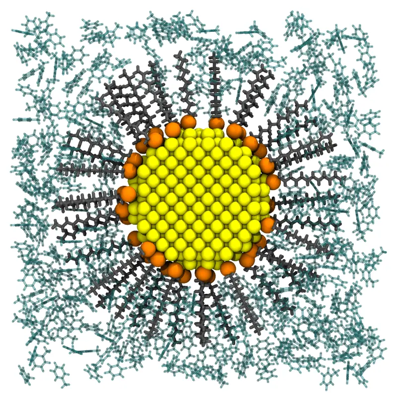
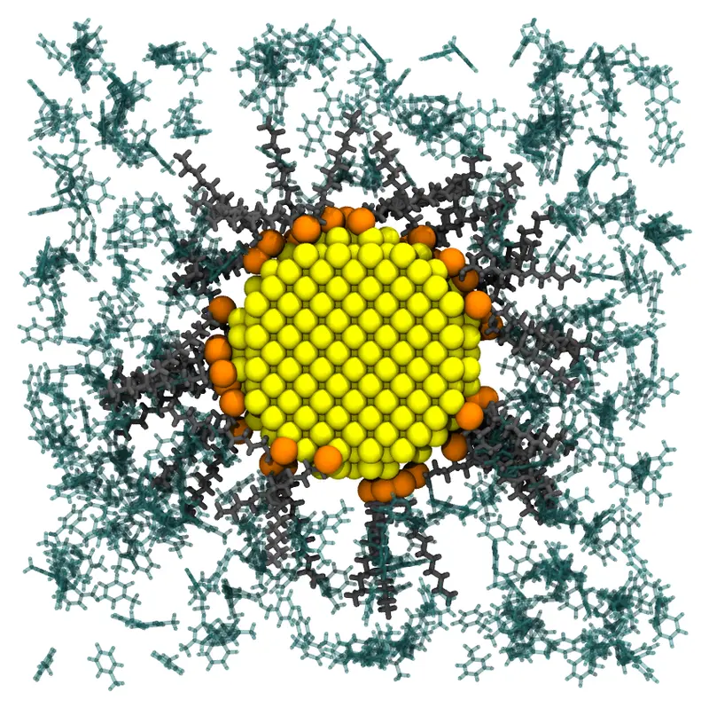

Gold nanoparticle in toluene
A gold nanoparticle protected by a monolayer of dodecanethiolates, in toluene: the nanoparticles of the Brust–Schiffrin synthesis, soluble in organic solvents. The gold core is a fixed molecule, the ligands are bound to its surface by their sulfur atoms, with their chains pointing outwards, and the solvent fills the cell around the particle and the space between the chains.

A slab of 16 Å through the center of the system: the gold core (yellow), the sulfur atoms of the ligands (orange), their chains (gray), and toluene (green).
Files: gold.pdb, ddt.pdb, toluene.pdb, and the input file gold_nanoparticle.inp.
The structures
- The gold core: the atoms of the face-centered cubic lattice of gold (a = 4.078 Å) within 15 Å of an atom: a sphere of 3 nm, with 887 atoms, centered at the origin. It was built by the script
gold.jl:
The script gold.jl (click to expand)
#
# The gold core of the nanoparticle (gold.pdb): the atoms of the fcc lattice of gold
# (a = 4.078 Å) within 15 Å of an atom, centered at the origin.
#
# julia gold.jl gold.pdb
#
using PDBTools
a = 4.078
R = 15.0
basis = [(0.0, 0.0, 0.0), (0.5, 0.5, 0.0), (0.5, 0.0, 0.5), (0.0, 0.5, 0.5)]
n = ceil(Int, R / a) + 1
atoms = Atom{Nothing}[]
for i in -n:n, j in -n:n, k in -n:n, (bx, by, bz) in basis
x, y, z = a .* (i + bx, j + by, k + bz)
x^2 + y^2 + z^2 <= R^2 || continue
push!(atoms, Atom(; name = "AU", resname = "AU", resnum = 1, chain = "A",
x, y, z, pdb_element = "Au"))
end
write_pdb(ARGS[1], atoms)
println(length(atoms), " gold atoms, radius ", round(maximum(sqrt(at.x^2 + at.y^2 + at.z^2) for at in atoms); digits = 2), " Å")
- The ligand: dodecanethiolate, C₁₂H₂₅S⁻, in its extended (all-trans) conformation, 15.3 Å from the sulfur atom (atom 1) to the last carbon atom (atom 13), built by Open Babel from its SMILES (
obabel -:"[S-]CCCCCCCCCCCC" -O ddt.pdb --gen3d -h), as was toluene (obabel -:"Cc1ccccc1" -O toluene.pdb --gen3d -h).
The numbers of molecules
- The ligands: thiolates on flat gold form a monolayer with one molecule per 21.4 Ų (the √3 × √3 R30° structure on Au(111)). On the 2830 Ų of the surface of the core, that is 132 ligands. On the curved surfaces of small nanoparticles, the ligands are denser, since their chains fan out: the number can be raised for smaller cores.
- The solvent: the cell is a cube of 80 Å, periodic, centered at the origin. The solvent fills the cell beyond the layer of sulfur atoms (18 Å from the center), whose volume, given by
free_volume(see Volume estimates), is 487000 ų. The ligands take 52000 ų of it: 132 × 396 ų, the volume of a molecule of dodecanethiol in the liquid (0.845 g/mL). The remaining 435000 ų holds 2465 molecules of toluene (0.867 g/mL).
Command line
The input file gold_nanoparticle.inp (click to expand)
#
# A gold nanoparticle protected by dodecanethiolates, in toluene: a gold core of 3 nm
# (887 atoms, radius 15 A), fixed at the center of a cubic periodic cell, with 132
# dodecanethiolates bound to its surface by their sulfur atoms, the chains pointing
# outwards, and toluene around it and between the chains.
#
# check_initial_placement
tolerance 2.0
output gold_nanoparticle.pdb
pbc -40. -40. -40. 40. 40. 40.
structure gold.pdb
number 1
fixed 0. 0. 0. 0. 0. 0.
end structure
# The ligands: one per 21.4 A2 of the surface of the core (that of a monolayer of
# thiolates on flat gold). The sulfur atoms (atom 1) in a shell 1 to 2.5 A above the
# surface, the ends of the chains (atom 13, C12) beyond 25 A from the center.
structure ddt.pdb
number 132
outside sphere 0. 0. 0. 16.
atoms 1
inside sphere 0. 0. 0. 17.5
end atoms
atoms 13
outside sphere 0. 0. 0. 25.
end atoms
end structure
# The solvent, beyond the layer of sulfur atoms: the free volume (487000 A3, see
# free_volume) minus the volume of the ligands (52000 A3, at the density of liquid
# dodecanethiol, 0.845 g/mL), at the density of toluene (0.867 g/mL)
structure toluene.pdb
number 2465
outside sphere 0. 0. 0. 18.
end structure
The ligands have constraints on the whole molecule and on two of their atoms (see Structure blocks):
- the whole molecule outside the sphere of 16 Å, the core and 1 Å beyond its atoms;
- the sulfur atom (
atoms 1) inside the sphere of 17.5 Å: with the constraint of the whole molecule, in a shell from 1 to 2.5 Å above the surface of the core; - the last carbon atom (
atoms 13) outside the sphere of 25 Å, so that the chains point outwards. The chains are 15.3 Å long, so their ends could reach 32.5 Å: the constraint is permissive, and the chains can tilt.
The solvent is kept outside the sphere of 18 Å: beyond the sulfur atoms, so that it does not reach the surface of the gold between them. It fills the rest of the cell, between the chains too.
Check the initial placement first
Uncomment the check_initial_placement line of the input file, and run it as below (see Checking the initial placement): the initial placement, written to the output file in a fraction of a second, has the sulfur atoms on the surface and the chains around the core, but the chains are still tilted and crowded:

When it looks like this, comment the line again, and run the packing.
Packing
packmol gold_nanoparticle.inpThe packing (42900 atoms) takes about 3 seconds. All the ligands end with their sulfur atoms 16 to 17.5 Å from the center, and their chains point outwards, at 15° from the radial direction on average, with their ends at 31 to 33 Å from the center.
Julia
using Packmolgold = structure_type("gold.pdb"; number = 1, fixed = ([0., 0., 0.], [0., 0., 0.]))ligands = structure_type("ddt.pdb"; number = 132, constraints = [OutsideSphere([0., 0., 0.], 16.)], atom_constraints = [ [1] => InsideSphere([0., 0., 0.], 17.5), # the sulfur atom [13] => OutsideSphere([0., 0., 0.], 25.), # the end of the chain ],)toluene = structure_type("toluene.pdb"; number = 2465, constraints = [OutsideSphere([0., 0., 0.], 18.)],)system = PackmolSystem([gold, ligands, toluene]; output = "gold_nanoparticle.pdb", tolerance = 2.0, unitcell = [80. 0. 0.; 0. 80. 0.; 0. 0. 80.], # centered at the origin # check_initial_placement = true, # uncomment to only place the molecules)packmol(system)free_volume(system) gives the volume available to the solvent.